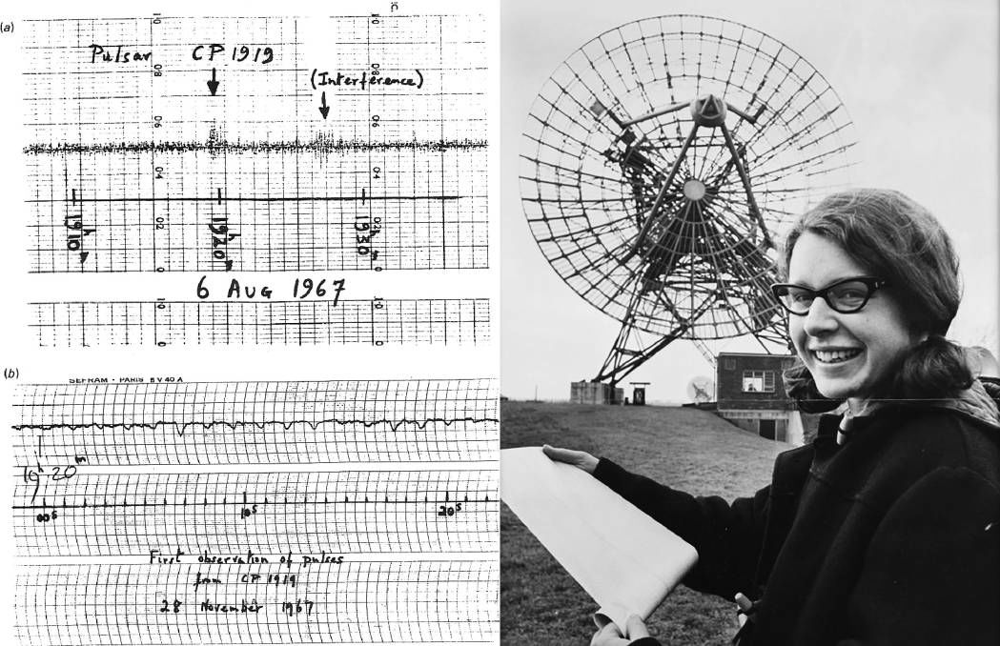
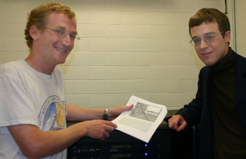
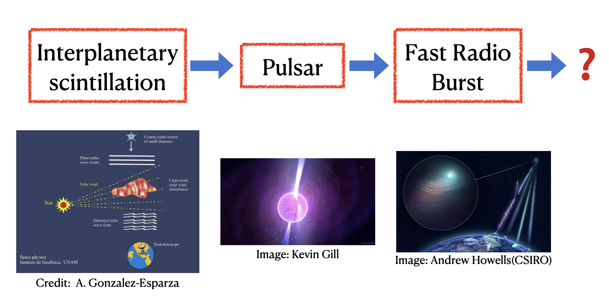

My research interests cover aspects as follows
Fast Radio Bursts
Fast Radio Bursts (FRBs) are a type of short-duration radio transients. These radio flashes last for only a few milliseconds (even tens of microseconds), and exhibit dispersive signatures with prominent flux densities. As a quite new astronomical phenomenon, FRBs have been drawing people’s attentions since 2007, when the first FRB (Lorimer Burst) was discovered serendipitously from the Parkes Pulsar Survey for Small Magellanic Cloud.

Up to now, the true nature of FRBs is still an mystery. The possible origins have been detabed intensively. New facilities with large field of view and high sensitivity have commenced observations, FRB astronomy has come to an epoch of large sample. We are hopeful to unveil the mysteries in the near future.

Pulsars
Pulsars are highly magnetized spinning compact stars (mainly neutron stars, rarely white dwarfs) that can emit beamed electromagnetic radiation. We would expect to observe periodic arrival pulses emitted from a pulsar like lighthouse sweeping.

Owing to the high precision of pulse arrival time measurments, millisecond pulsars (MSPs) in binaries are widely used to test the gravity theories like General Relativity. In addition, long-term timing by monitoring dozens of MSPs at different positions is a unique approach to detect nano-hertz gravitational waves from the distant universe, i.e. Pulsar Timing Array (PTA).

The Unknown Unknowns
Since the 20th century, there have been lots of exciting and intriguing discoveries in astronomy, including cosmic ray, quasar, the cosmic microwave background, pulsar, gamma-ray burst, etc. In fact, most of spectacular astronomical phenomena were serendipitously found for the first time, which means they were accidentally detected when astronomers were observing the other targets or planning other things. In time-domain radio astronomy, the most representative examples are the first pulsar discovered by Jocelyn Bell Burnell in 1967 and the first fast radio burst by Duncan Lorimer in 2007.
 
Different from the past, emerging mega-science facilities, such as the Square Kilometre Array (SKA), challenge us on how to find the unknown unknowns from data-intensive sciences. Meanwhile, innovative instrumentation provide us opportunities to search for new astronomical stuff deliberately, which is completely different from the historic serendipities that were merely made by coincidence. So what’s the next discovery after fast radio burst? Let’s make it happen rather than waiting and seeing.

Radio Frequency Interference
Radio frequency interference is unwanted signals in radio data, which is usually produced by man-made electronic devices. For radio observers, it’s inevitable to deal with a variety of radio frequency interference (RFI) in observing. Since the electromagnetic environment is becoming worse and worse around the world, RFI mitigation has been regarded as the key to radio observations on the ground.

Deep Learning
In the past years, Machine Learning have been growingly applied in the astronomical data-intensive sciences. In the time-domain regime, some ML approaches are playing decisive roles in data reduction and candidates selection, such as convolutional neural network, (CNN).